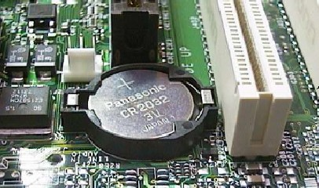

Relógio do sistema incorreto
O problema
A data ou a hora aparecem erradas, atrasadas, adiantadas ou voltam para uma data antiga toda vez que o computador é ligado. O relógio errado faz sites mostrarem erro de certificado ("Sua conexão não é particular"), impede atualizações e atrapalha programas que dependem da data.
Possíveis causas
Fuso horário configurado errado, sincronização com servidor NTP (Network Time Protocol, o serviço da internet que informa a hora certa) desativada, bateria CMOS gasta (a pilha da placa-mãe que mantém o relógio funcionando com o computador desligado) e dual boot (dois sistemas instalados no mesmo computador) entre Windows e Linux.

Solução no Windows
Abra Configurações > Hora e idioma > Data e hora, ative Definir horário automaticamente e Definir fuso horário automaticamente (ou escolha "(UTC-03:00) Brasília") e clique em Sincronizar agora.
Se a sincronização falhar, execute no Prompt de Comando como administrador net stop w32time,
net start w32time e w32tm /resync, e confira em services.msc se o
serviço Horário do Windows está como Automático.
Solução no Linux
O comando timedatectl mostra a hora, o fuso horário e se a sincronização NTP está ativa. Para
corrigir, use sudo timedatectl set-timezone America/Sao_Paulo e sudo timedatectl
set-ntp true. Pela interface, as mesmas opções ficam em Configurações > Sistema > Data e
hora.
No dual boot, a hora fica errada no Windows sempre que se usa o Linux, porque o Linux grava o relógio da
placa-mãe em UTC (horário universal) e o Windows o lê como horário local. Para resolver, execute no Linux
timedatectl set-local-rtc 1 --adjust-system-clock e depois sincronize a hora no Windows.
Quando é a bateria CMOS
Se a data volta para um dia antigo sempre que o computador fica fora da tomada, a bateria da placa-mãe, normalmente do modelo CR2032, se esgotou. Com o computador desligado e fora da tomada, abra o gabinete, retire a bateria, coloque uma nova do mesmo modelo e ajuste a data e a hora no setup da BIOS/UEFI (o programa de configuração da placa-mãe). Veja também Problemas mais comuns em computadores antigos.